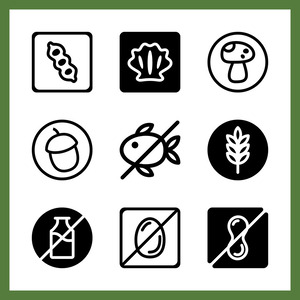

Hi! I'm Sarah Patel, a passionate and driven Computer Science graduate with a love for technology and problem-solving. I recently completed my degree at the University of Florida, where I gained a solid foundation in software development and problem-solving. My interest in technology goes beyond just building applications – I’m fascinated by how technology can be used to solve real-world problems and make life easier.
I have experience working with a variety of programming languages, including JavaScript, Python, and C++. I’ve worked on projects involving APIs and have hands-on experience with modern frameworks like Angular and React. My approach to software engineering is centered around writing clean, maintainable code and using problem-solving techniques to create reliable and scalable solutions.
When I’m not in front of a computer, I like to spend my time reading, listening to music, and baking. Take a look through my portfolio to see some of the projects I’ve worked on. If you're interested in collaborating or just want to chat, feel free to reach out!
GPA: 3.99/4.0; Cum Laude
Relevant Coursework: Calculus 2 & 3, Data Structures and Algorithms, Operating Systems, Algorithm Abstraction, Information and Database Systems, Network Fundamentals

An application that enables users to search common groceries, quickly view ingredients they may be personally allergic to in each product, and add desired items to a convenient shopping list. Users can also "favorite" food items so they can quickly and easily be viewed.
View DemoA user-friendly menu-based interface where users can select from various options for movie recommendations, including suggestions based on a specific movie, genre, or similar user reviews.
View Demo• Designed a comprehensive strategy and developed roadmap for integrating augmented reality into spine surgery, enhancing precision and visibility in clinical settings. • Collaborated in creating prototypes and designing a framework to collect imaging data that can be used to customize an existing image recognition AI algorithm.
• Worked on the development of Parchment, an application designed to combine the user’s file system and browser to create a customizable digital workspace. • Refined UI using JavaScript and CSS for improved navigation and user experience (UX). • Integrated Google Drive functionality using Google API for seamless access and management of local & cloud files from within Parchment.
• Helped create an augmented reality solution to improve surgical outcomes for orthopedic surgery, spine surgery, and anesthesiology. • Helped design hardware and refine software user interface (UI) to create a simple, intuitive, and robust screen-mirroring on a mobile augmented reality display for surgeons in the operating room.